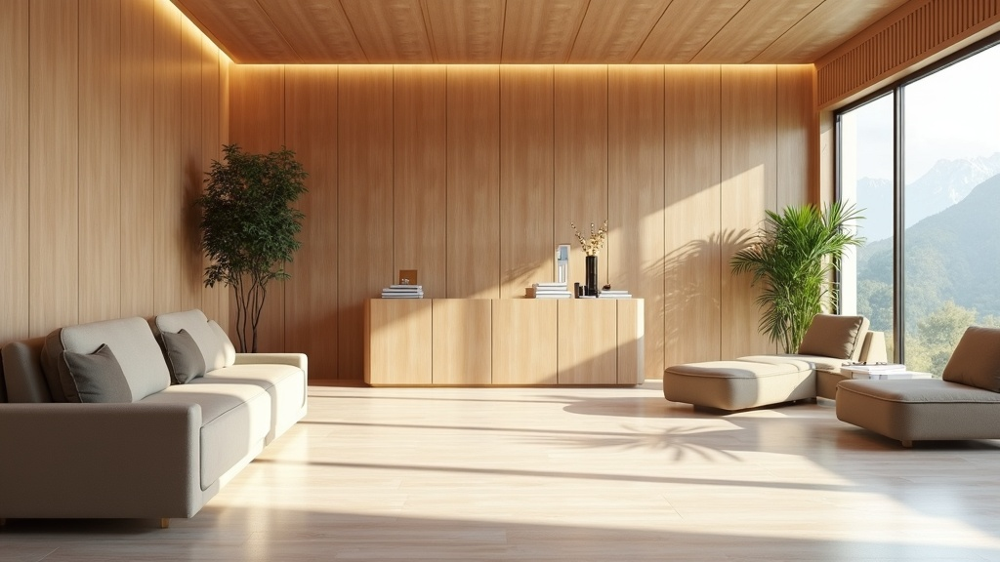
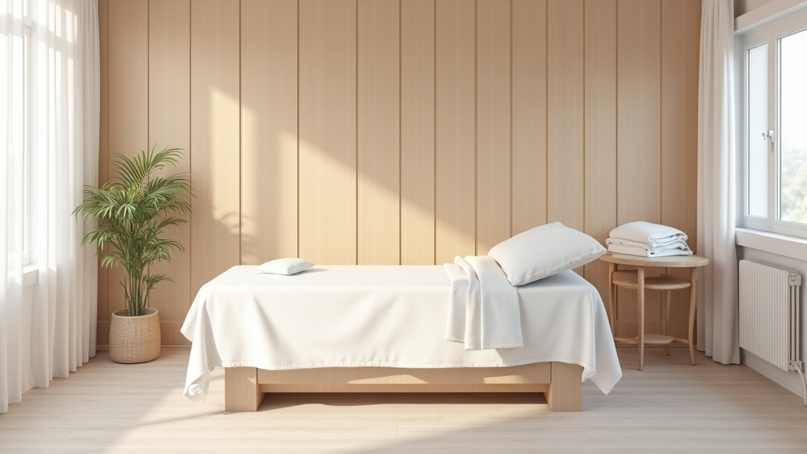
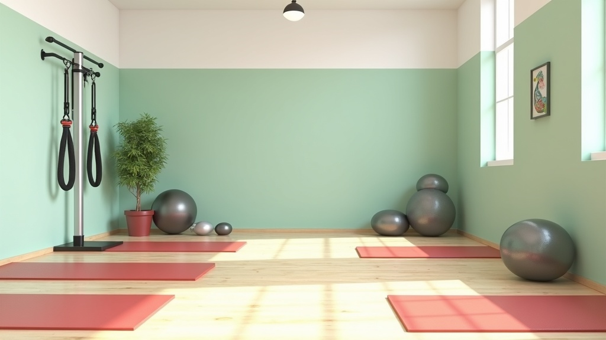
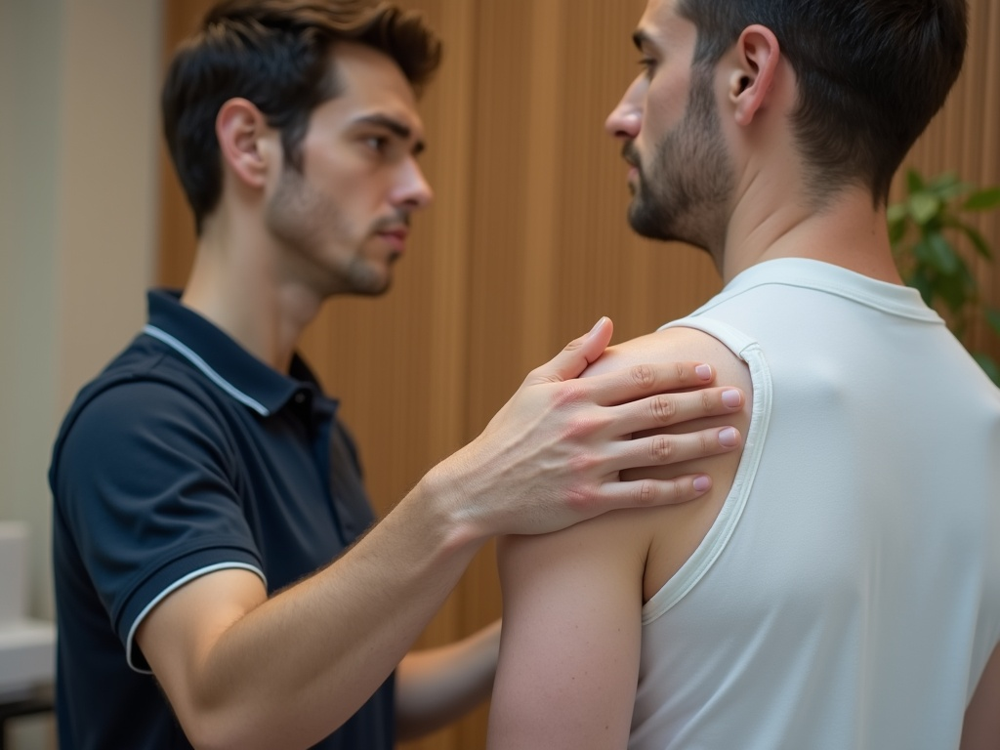
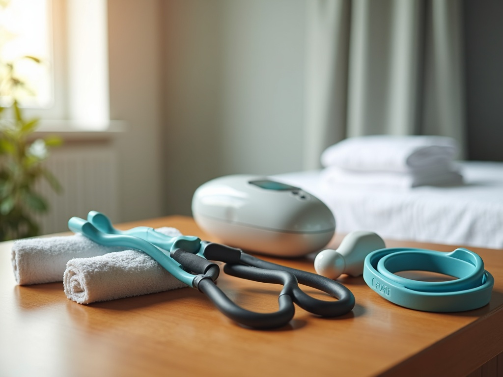
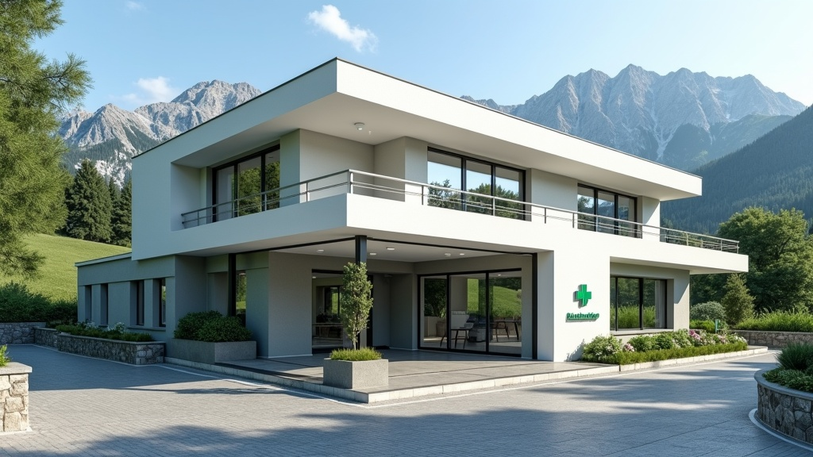

Fisioterapia, movimento
e alimentazione,
per stare meglio davvero.
Un centro di riferimento per la salute della persona in Val Brembana: fisioterapisti, massoterapisti e biologhe nutrizioniste della Valle, per le persone della Valle. La nostra attenzione e la nostra esperienza per farti stare meglio.
Via Piave, 8 — Zogno (BG) · 5,0/5 su Facebook (14 recensioni) · 3.250+ follower su Instagram
Il nostro obiettivo è farti stare meglio
Sette aree di intervento, dalla riabilitazione post-chirurgica alla performance sportiva. Contenuti dal sito storico di Orobie Salute — nessun servizio inventato.
Riabilitazione
Recupero della mobilità articolare, della forza e dell'indipendenza quotidiana prima e dopo interventi ortopedici (protesi, legamenti, fratture, cuffia dei rotatori) e nel ritorno allo sport.
Fisioterapia
Risoluzione a lungo termine di cervicalgia, lombalgia e dolori ricorrenti; prevenzione e cura di tendinopatie, infiammazioni e distorsioni da sport o lavoro.
Massoterapia
Massaggio decontratturante, sportivo, linfodrenaggio o massaggio terapeutico: dalle tensioni quotidiane al recupero post gara/allenamento.
Alimentazione
Percorsi nutrizionali personalizzati per dimagrimento, performance sportiva o co-terapia in caso di patologia diagnosticata dal medico.
Palestra
Programmi di attività fisica su misura: pochi minuti al giorno per ridurre il rischio cardiovascolare, migliorare autonomia ed equilibrio.
Terapie fisiche
Tecarterapia e onde d'urto radiali, eseguite dal fisioterapista o su prescrizione dello specialista, per problematiche selezionate.
Coaching running & trail
Preparazione personalizzata indoor e outdoor per la corsa e il trail running, per raggiungere i tuoi obiettivi restando lontano dagli infortuni.
🤸 Corsi di gruppo — Ginnastica e Rinforzo muscolare
Ginnastica dolce, ginnastica a corpo libero e rinforzo muscolare con pesi e bande elastiche: un modo per tenersi in forma divertendosi in compagnia, adatto a ogni livello.
Professionisti della Valle, per le persone della Valle
8 professionisti reali con qualifica e numero d'albo, dal sito storico di Orobie Salute. Nessun nome inventato.
Alex Baldaccini
Fisioterapista e Massoterapista · Fondatore- Laureato con lode in Fisioterapia (2016), diplomato in Massoterapia (2013)
- Formatore CONI dal 2023 · Atleta Azzurro di corsa dal 2007
- Specializzato in infortuni sportivi e riabilitazione post-trauma/intervento
Laura Angeloni
Fisioterapista- Laureata nel 2009 · 15+ anni in riabilitazione neurologica (metodo Bobath)
- Rieducazione Posturale Globale (RPG, metodo Ph. Souchard)
- Clinical Pilates individuale e in piccoli gruppi
Beatrice Baroni
Fisioterapista e Massoterapista- Laureata a pieni voti nel 2023, diplomata in Massoterapia nel 2021
- Riabilitazione ortopedica, traumatologica e neurologica
- Corsi di gruppo con consulenza gratuita iniziale
Gloria Rovelli
Massoterapista- Diplomata in Massoterapia nel 2015 · Massaggiatrice sportiva
- Al seguito di squadre professionistiche MTB (Wilier Force 7c, Wilier Pirelli Factory Team)
- Maestra di Sci Alpino dal 2013
Roberto Rocchini
Personal Trainer, Massoterapista- Chinesiologo, laureato in Scienze Motorie
- Allenamento funzionale e riatletizzazione
- Atleta agonista e coach di calisthenics certificato CSEN
Nicole Baroni
Massoterapista, istruttrice di ginnastica- Ex ginnasta agonista di ginnastica ritmica
- Istruttrice dei corsi di gruppo (ginnastica dolce e rinforzo muscolare)
- Diplomata in Massoterapia, massaggiatrice sportiva
Emanuela Astori
Biologa Nutrizionista, PhD- Laureata con lode in Biologia della Nutrizione (2017) · Dottorato di ricerca (2021)
- Certificato Esperto in nutrizione sportiva SANIS (2020)
- Percorsi nutrizionali in ambito fisiologico, patologico e sportivo
Sophie Peduzzi
Biologa Nutrizionista- Laureata con lode in Biologia della Nutrizione (2025)
- Percorsi nutrizionali flessibili e personalizzati
- Aggiornamento continuo su evidenze scientifiche recenti

Dall'esperienza in Valle, un centro per la Valle
Dopo oltre 5 anni come titolare e fisioterapista presso AB Fisio a San Pellegrino Terme, Alex Baldaccini ha deciso di ampliare l'offerta per la popolazione della Val Brembana: nasce così Orobie Salute, centro di riferimento per la salute della persona.
"Ritengo necessario guidare il paziente attraverso la comprensione del problema ed una risoluzione a lungo termine, dando le indicazioni necessarie per migliorare l'allenamento o lo stile di vita." — Alex Baldaccini
Oggi il team riunisce fisioterapisti, massoterapisti, personal trainer e biologhe nutrizioniste: un approccio alla salute della persona a 360°, dalla riabilitazione post-trauma alla prevenzione, fino alla performance sportiva.
Uno spazio pensato per il recupero
Immagini generate con l'AI per mostrare lo stile e l'atmosfera dello studio — non sono foto reali di Orobie Salute (vedi README per i dettagli).




⚠️ Immagini illustrative generate con AI (fal-ai/flux), non fotografie reali dello studio di Zogno.
Cosa dicono di noi
Recensioni reali riprese dal sito storico di Orobie Salute — nessun testo inventato.
"Da tempo soffrivo di dolore alla muscolatura delle spalle e della cervicale e neanche con i farmaci trovavo sollievo. Dopo alcune sedute con Alex il problema si è risolto. Consigliatissimo!"
"Grande professionalità, ottimo fisioterapista. Attento al dettaglio. Eccezionale coach runner, sempre presente e disponibile a tutti i chiarimenti. Molto competente nella preparazione atletica e recupero fisico."
"Alex è veramente un professionista. Tutte le sedute di fisioterapia sono state molto piacevoli e mirate a trovare una soluzione di lungo termine, assieme a preziosi consigli."
Prenota il tuo appuntamento
Rispondiamo al telefono, via email o direttamente al professionista che ti interessa. Il modulo qui sotto è una demo: nessun dato viene inviato a un server reale.
Contatta direttamente il professionista
Richiesta inviata (demo)
In un sito reale, lo studio riceverebbe la richiesta e ricontatterebbe il paziente per confermare l'appuntamento.